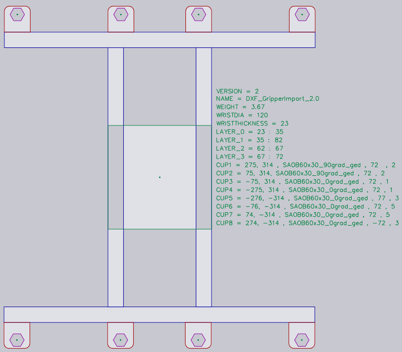

Gripper importálása DXF-ből
Vákuumos szívó gripper a BendMaster gépekhez importálható DXF fájlból. A DXF fájl a gripper felső nézetét ábrázolja (felső nézet a szívó kupáktól néz, NEM a BendMaster-től). A DXF fájlban található POLYLINE entitások biztosítják a gripper lap alakját, a TEXT entitások pedig további információkat nyújtanak a gripperről (mint a neve, vastagsága és szívókupa elhelyezése).
A szükséges formátumú fájlok (DXF, ARV vagy GEO) importálhatók a Bend adatbázisba.
Gripper importálásához:
-
Nyissa meg a Database-t a TecZone Bend-ban.
-
Válassza a Bend Grippers opciót a listából.
-
Kattintson az Import… opcióra és válasszon ki egy grippert DXF fájlként a könyvtárból.

Így néz ki ez a gripper importálás után (két nézetben, alulról és felülről látható).


Alapvető gripper
Lásd az alább látható egyszerű rajzot, amely egy grippert határoz meg és menthető DXF fájlként, hogy visszaimportálható legyen a Gripper készletbe.

Itt találhatók néhány fontos pontok arról, hogyan van megrajzolva a DXF:
-
A rajz origója (0,0) megfelel a robot csuklópontjának középpontjának. Ezt egy pont és egy kör reprezentálja az ábrán. (Mind a pont, mind a kör nem igazán szükséges a gripper importhoz, mivel a gripper középpontja implicitesen mindig az origóban van).
-
Ez a rajz néhány POINT entitást is tartalmaz, amelyek az egyes szívókupa helyzeteket ábrázolják. Ezek ismét elsősorban a rajz érthetőbbé tételét szolgálják és valójában nem használja a gripper importáló (a szívókupa pozíciók szöveges entitásokkal vannak megadva).
-
A tényleges lap alakja zárt POLYLINE entitásokként van megrajzolva. Ha más polilineái vannak a külső belsejében, azok lyukakká válnak a lapon.


Két rétegű gripper
Kissé összetettebb gripperek modellezhetők külön BASEPLATE réteg használatával. Hozzon létre egy BASEPLATE nevű réteget a DXF fájlban, és rajzoljon néhány zárt POLYLINE alakzatot abban a rétegben. Ezután ez a réteg külön Z extrudálási határokkal rendelkezhet, amelyeket a BASEPLATEEXTENT kulcs határoz meg. A rétegek létrehozásához és szerkesztéséhez szükséges eszközök most hozzá vannak adva.
-
Kattintson az Related gombra, amikor egy rajzot szerkeszt.
-
Válassza a Layers menüt új rétegek hozzáadásához, átnevezéséhez, színek beállításához és vonalstílusok módosításához.

-
A rajzban egy entitásra kattintva megváltoztathatja annak rétegét.

A réteg csak akkor jelenik meg az entitás panelen, ha több réteg van a rajzban. -
A rajz szerkesztése után ezekkel az eszközökkel mentse el a rajzot DXF formátumban. Itt van egy ilyen BASEPLATE réteget használó DXF (a képen zöld színnel látható).

Ennél a grippernél a csuklópont Z=0-tól Z=23-ig terjed. Aztán az alaplap (zöld) Z=23-tól Z=40-ig terjed, ahogy a BASEPLATEEXTENT kulcs jelzi. Végül a tényleges gripper lap (amely tartja a szívókupákat) Z=40-től Z=63-ig terjed, ahogy a PLATEEXTENT kulcs jelzi. A gripper lap néhány hatszögletű lyukat is tartalmaz. Importálás után ez a gripper így néz ki:

Több rétegű gripper
A Több rétegű gripperek a Két rétegű gripper frissített verziója, amelyben több mint két réteg hozható létre és importálható a TecZone Bend használatával. Több rétegű gripper használatához a DXF-nek tartalmaznia kell a VERSION = 2 szöveget. Egy minta több rétegű gripper az alábbiakban látható:

Minden réteget meg kell határozni a kiterjedésével, mint LAYER_1 = 23 : 35. Az ebben a rétegben található entitások hozzáadódnak ezekhez a kiterjedésekhez. Hasonlóképpen, a kupák a következő formában vannak meghatározva: CupNo = X pos, Y pos, [Cup type, Mounting height, Cup group].
| Az X és Y pozíciók kötelezőek. |
A szívókupák különböző lehetséges meghatározásai az alábbiakban találhatók:
CupNo = X pos, Y pos, ahol a kupa neve a CUPNAME-ben van megadva, mint az előző verzióban
CupNo = X pos, Y pos, Cup type, ahol minden kupatípus külön van meghatározva (ovális
kupák esetén a nevek változnak a szöggel)
CupNo = X pos, Y pos, Cup type, Mounting Height
CupNo = X pos, Y pos, Cup type, Mounting Height, Cup Group
CUP1 = 275, 314, SAOB60x30_90grad_ged, 72, 2
Ha a szerelési magasság nincs megadva, alapértelmezés szerint a maximális lap kiterjedés kerül figyelembe vételre. Hasonlóképpen, a szívókupa csoport 1-re lesz beállítva, ha nincs meghatározva.
| Jelenleg a TecZone Bend nem támogatja a különböző szerelési magasságokat a szívókupák számára. |
Importálás után egy minta gripper így néz ki:


Több áramkörös gripper
Létrehozhat több áramkörös grippert (egy grippert, amely több független vákuum áramkörrel rendelkezik). Egy ilyen grippernél minden szívókupának nem nulla csoportszám van hozzárendelve.
Rendeljen szívócsoportokat speciális formátumot használva a CUP1POS, CUP2POS stb. számára, ahogy az alábbiakban látható:
CUP1POS = 340,120 #6
CUP2POS = 420,140 #8
A # utáni érték a kupa szívócsoport száma. Ebben a példában a Cup 1 a 6-os szívócsoporthoz van rendelve, a Cup 2 a 8-as szívócsoporthoz, és így tovább.
Ahhoz, hogy egy több áramkörös gripper helyesen legyen konfigurálva, minden kupához hozzá kell rendelni egy szívócsoport számot ezen a módon.
| Az egy gripperben használható szívókupák maximális száma 100-ra korlátozódik. Ha több mint 100 szívókupával rendelkező grippert importál, a TecZone importálási hiba üzenetet fog megjeleníteni. |
Az alábbi kép néhány minta grippert mutat a bend Bend Grippers adatbázisban.